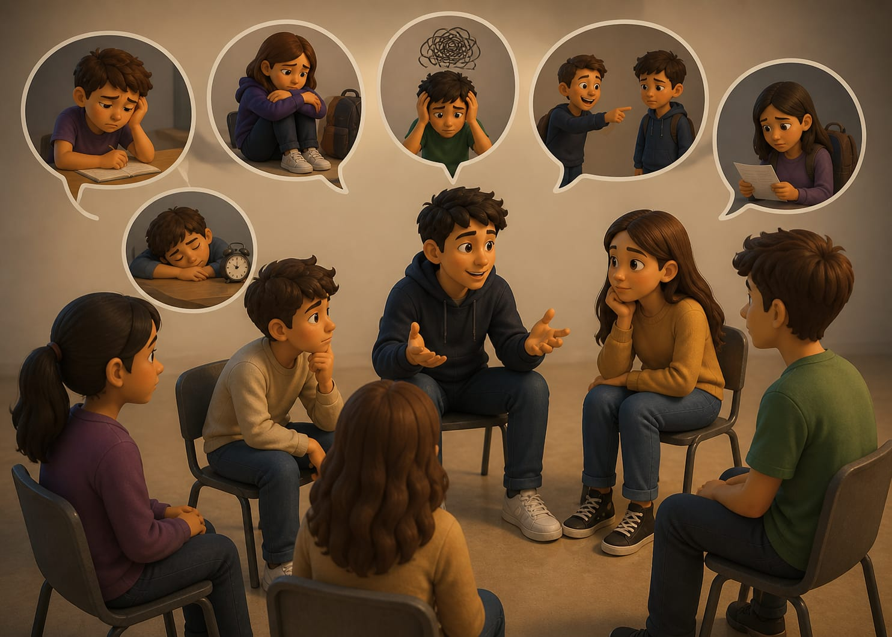

- Historia 1: Al inicio del semestre iba bien: entregaba todo y no tenía problemas. Pero después empecé a distraerme y a dejar las cosas para el final, y mis calificaciones bajaron bastante. Incluso tuve que ir a recuperación y me sentí muy mal conmigo misma.
Eso me hizo reflexionar. Pensé que, si realmente quiero algo para mi futuro, necesito terminar la preparatoria y seguir adelante. Así que cambié algunos hábitos, me esforcé más y traté de enfocarme. Con el tiempo fui mejorando y logré recuperar mis calificaciones.
- Historia 2: La verdad me iba muy mal. Llegué a varias recuperaciones y hubo momentos en los que pensé en dejar la escuela. Me costaba poner atención y no siempre cumplía con las tareas.
Pero después pensé al menos quiero terminar la prepa. Sé que, aunque ahora no esté seguro de seguir estudiando, tener la preparatoria puede darme mejores oportunidades de trabajo.
Entonces empecé a esforzarme, poco a poco. También pensé que más adelante podría cambiar de opinión y seguir estudiando. Por eso decidí no rendirme y terminar lo que ya había empezado.
A lo largo del camino escolar es normal enfrentar momentos de dificultad, desmotivación o dudas sobre el futuro. Como muestran estos testimonios, bajar el rendimiento o sentir ganas de abandonar no significa que todo esté perdido. Al contrario, puede ser una oportunidad para detenerse, reflexionar y tomar nuevas decisiones.
Terminar la preparatoria no solo representa un logro académico, sino también un paso importante hacia mejores oportunidades personales y laborales. A veces no se trata de cambiar todo de un día para otro, sino de empezar con pequeños esfuerzos, retomar hábitos y mantener claro el objetivo.
No rendirse es una decisión que se toma día a día. Incluso cuando el camino se vuelve difícil, siempre es posible volver a intentarlo, mejorar y seguir avanzando hacia un futuro con más posibilidades.

⬅ Volver al menú